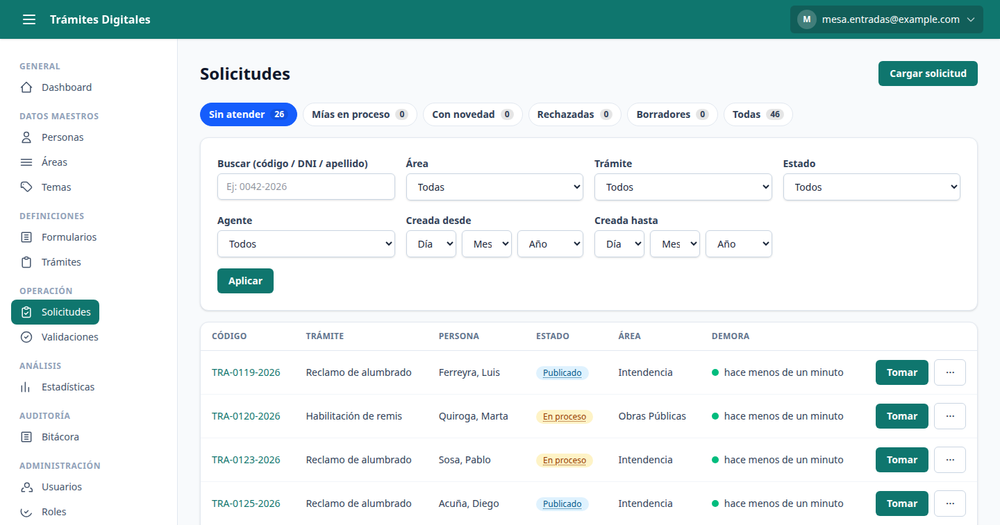
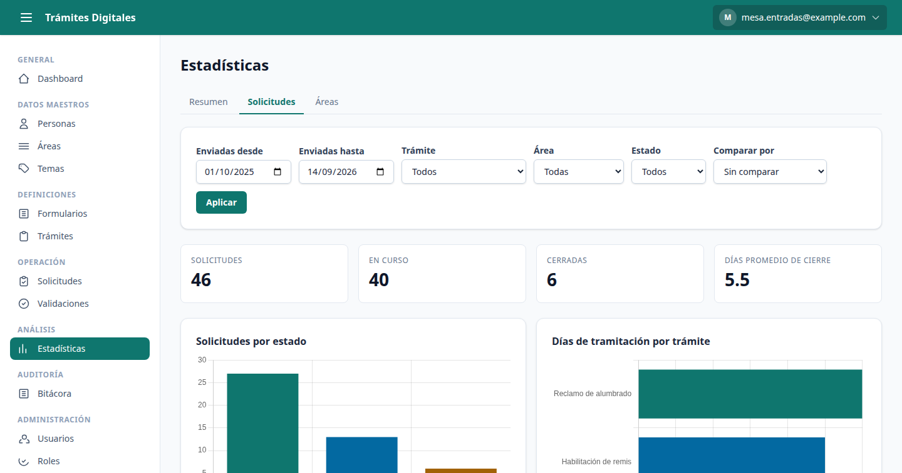
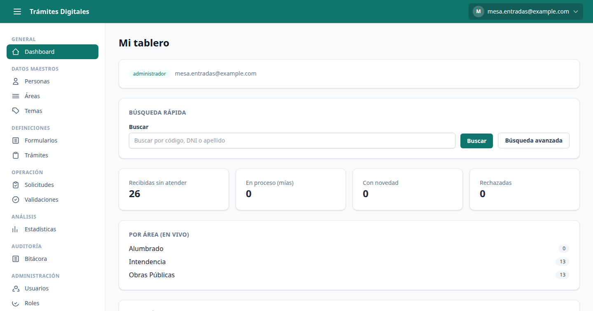

Solicitudes en línea
El vecino elige el trámite, completa el formulario y adjunta la documentación desde cualquier dispositivo.
Una plataforma para que los vecinos hagan sus gestiones sin filas y el municipio las atienda con seguimiento de principio a fin.

14
módulos en producción
75
permisos configurables
5
roles internos de base
4
niveles de verificación
Cifras tomadas de la definición vigente del sistema, no de un folleto.
El portal cubre todo el ciclo del trámite. Estos son los módulos que operan hoy.
El vecino elige el trámite, completa el formulario y adjunta la documentación desde cualquier dispositivo.
Cada trámite tiene su propio camino y el vecino ve en qué punto está en todo momento.
Los agentes filtran, toman y resuelven las solicitudes con turnos de atención por estado.
Las consultas y respuestas quedan adjuntas al expediente, con aviso dentro del portal.
Contadores de bandeja y solicitudes sin leer se actualizan en tiempo real, sin recargar la página.
Cada cambio de estado se avisa por correo y dentro del portal: no hace falta volver a preguntar.
Los documentos emitidos llevan un código QR que permite validar su vigencia al instante.
Cada acción queda registrada en una bitácora de solo lectura, en línea con la Ley 25.326.
Del formulario a la resolución, cada paso queda registrado.
El vecino lo busca en el catálogo y lo abre.
Carga los datos y adjunta la documentación requerida.
La solicitud entra a la bandeja y un agente la toma.
Verificaciones, respuestas y consultas se agregan al expediente.
El trámite se resuelve y el vecino recibe la notificación.
Pantallas reales de la plataforma. Los datos que se ven son ficticios; el software es el que se instala.


Descripción funcional y técnica del sistema de trámites municipales en línea: módulos que lo componen, procedimientos de uso por rol y matriz completa de permisos. Redactado para acompañar un expediente administrativo o una sesión de concejo deliberante.
Cada módulo del sistema, qué problema administrativo resuelve, qué rol lo opera habitualmente y qué permisos exige para funcionar.
| Módulo | Qué resuelve | Quién lo opera | Permisos que exige |
|---|---|---|---|
| Solicitudes en línea | El vecino inicia su gestión desde cualquier dispositivo: elige el trámite del catálogo, completa el formulario y adjunta la documentación. Cada solicitud recibe un número propio y queda registrada con fecha y hora. | Vecino · Agente (carga asistida en mesa de entradas) | crear-solicitudes ver-solicitudes |
| Bandeja y turnos de atención | Las solicitudes entrantes se agrupan por estado y por área. El agente filtra, toma una solicitud y queda como responsable, lo que evita que dos personas trabajen el mismo expediente. | Agente · Supervisor | panel-agente atender-solicitudes |
| Movimientos y expediente | Cada intervención sobre la solicitud (verificación, pedido de documentación, nota interna, respuesta al vecino) se asienta como un movimiento fechado y firmado por su autor. El conjunto forma el expediente digital del trámite. | Agente · Supervisor | ver-solicitud-tramite editar-solicitudes finalizar-solicitud |
| Formularios versionados | El municipio define los campos de cada trámite sin programar. Al publicar una modificación se crea una versión nueva: las solicitudes ya iniciadas conservan el formulario con el que fueron presentadas, tal como exige la validez del acto administrativo. | Administrador · Supervisor | ver-formularios crear-formularios editar-formularios publicar-formularios |
| Trámites y estados | Cada trámite define su propio circuito: qué acciones existen, en qué orden, qué estado deja cada una y qué nivel de verificación exige del vecino. No hay un flujo único impuesto a todos los trámites. | Administrador · Supervisor | ver-tramites crear-tramites editar-tramites ver-acciones crear-acciones |
| Áreas y derivación | Refleja el organigrama municipal. Una solicitud puede derivarse de un área a otra dejando constancia del movimiento, y cada agente ve la bandeja de las áreas a las que pertenece. | Administrador · Supervisor | ver-areas crear-areas asignar-areas mover-area |
| Padrón de personas | Registro único de vecinos y personas jurídicas. Concentra los datos identificatorios para no volver a pedirlos en cada trámite. El DNI y sus imágenes son datos sensibles y requieren un permiso específico para verse. | Agente · Supervisor | ver-persona crear-persona editar-persona ver-dni |
| Usuarios internos | Alta, baja y modificación del personal municipal que opera el sistema, con asignación de roles y de áreas. Las bajas van a una papelera recuperable, no se borran. | Administrador · Supervisor | ver-usuario crear-usuario editar-usuario borrar-usuario |
| Roles y permisos | El municipio puede crear roles propios además de los del sistema y componerlos permiso por permiso, sin intervención del proveedor. La sección 3 de este documento lista el vocabulario completo. | Administrador | ver-rol crear-rol editar-rol borrar-rol |
| Verificación pública por QR | Los documentos emitidos llevan un código QR. Quien lo escanea —otro organismo, un comercio, un inspector— ve si el trámite está vigente sin necesidad de cuenta y sin acceder a ningún dato personal del vecino. | Público general (sin cuenta) | Ninguno: acceso público sin autenticación |
| Notificaciones y mensajería | Cada cambio de estado se avisa por correo electrónico y dentro del portal. Las consultas del vecino y las respuestas del municipio quedan adjuntas al expediente, no en canales informales. | Sistema · Agente · Vecino | mensajes-generales |
| Bitácora de auditoría | Registro de solo lectura de las acciones relevantes: quién hizo qué, sobre qué objeto, desde qué dirección IP y en qué momento. No admite edición ni borrado desde la aplicación. Es el respaldo ante un pedido de informes o una auditoría. | Auditor | ver-auditoria |
| Estadísticas e indicadores | Tableros con volumen de solicitudes, tiempos de resolución y carga por área, filtrables por período y exportables a PDF y CSV para adjuntar a un informe de gestión. | Supervisor · Auditor · Visualizador | ver-reportes crear-reportes |
| Configuración institucional | Nombre del municipio, logo, colores, datos de contacto y textos legales del portal. Se administra desde la propia aplicación, sin tocar código ni requerir un despliegue. | Administrador | ver-configuracion editar-configuracion |
Secuencia operativa de cada rol sobre el sistema. Los pasos describen el circuito completo de un trámite, desde que el vecino lo inicia hasta que queda archivado y auditado.
Persona que inicia y sigue su propia gestión. No accede a la plataforma interna.
Personal que atiende y resuelve las solicitudes de su área.
Responsable de un área o de la mesa de entradas. Además de atender, organiza el trabajo y define trámites.
Responsable funcional del sistema en el municipio. Tiene la totalidad de los permisos.
Control interno. Ve todo el sistema y no puede modificar nada: sus permisos son exclusivamente de lectura.
Vocabulario completo de permisos del sistema y su asignación a cada rol de base. El municipio puede además componer roles propios con cualquier combinación de estos permisos. Esta tabla se genera directamente desde la definición vigente del sistema.
75 permisos en 16 grupos funcionales · 6 roles de base
| Permiso | Administrador | Supervisor | Agente | Auditor | Visualizador | Vecino |
|---|---|---|---|---|---|---|
| Roles | ||||||
Ver los roles y sus permisosver-rol |
✓ | — | — | ✓ | — | — |
Crear nuevos rolescrear-rol |
✓ | — | — | — | — | — |
Editar un rol y los permisos que tiene asignadoseditar-rol |
✓ | — | — | — | — | — |
Eliminar roles (no los del sistema)borrar-rol |
✓ | — | — | — | — | — |
| Usuarios | ||||||
Ver el listado y la ficha de usuarios internosver-usuario |
✓ | ✓ | — | ✓ | — | — |
Dar de alta usuarios internoscrear-usuario |
✓ | ✓ | — | — | — | — |
Editar datos, roles y nivel de un usuarioeditar-usuario |
✓ | ✓ | — | — | — | — |
Eliminar usuarios (papelera recuperable)borrar-usuario |
✓ | ✓ | — | — | — | — |
Cambiar la dirección de e-mail de un usuariocambiar-email-usuario |
✓ | ✓ | — | — | — | — |
Validar la identidad de un vecino y promover su nivelvalidar-usuario |
✓ | ✓ | ✓ | — | — | — |
| Personas | ||||||
Ver el padrón de personasver-persona |
✓ | ✓ | ✓ | ✓ | — | — |
Dar de alta personas en el padróncrear-persona |
✓ | ✓ | ✓ | — | — | — |
Editar datos de una personaeditar-persona |
✓ | ✓ | ✓ | — | — | — |
Eliminar personas (papelera recuperable)borrar-persona |
✓ | ✓ | — | — | — | — |
Ver el DNI completo y sus imágenes (dato sensible)ver-dni |
✓ | ✓ | ✓ | ✓ | — | — |
Cargar solicitudes en nombre de una personacarga-solicitudes-persona |
✓ | ✓ | ✓ | — | — | — |
| Áreas | ||||||
Ver las áreas y su jerarquíaver-areas |
✓ | ✓ | ✓ | ✓ | ✓ | — |
Crear nuevas áreascrear-areas |
✓ | ✓ | — | — | — | — |
Editar áreas existenteseditar-areas |
✓ | ✓ | — | — | — | — |
Eliminar áreasborrar-areas |
✓ | ✓ | — | — | — | — |
Asignar usuarios a un áreaasignar-areas |
✓ | ✓ | — | — | — | — |
| Solicitudes | ||||||
Mover una solicitud de un área a otramover-area |
✓ | ✓ | ✓ | — | — | — |
Ver las solicitudes de los vecinosver-solicitudes |
✓ | ✓ | ✓ | ✓ | ✓ | — |
Iniciar/cargar solicitudescrear-solicitudes |
✓ | — | ✓ | — | — | — |
Editar solicitudes existenteseditar-solicitudes |
✓ | ✓ | ✓ | — | — | — |
Eliminar solicitudesborrar-solicitudes |
✓ | — | — | — | — | — |
Tomar y trabajar solicitudes de la bandejaatender-solicitudes |
✓ | ✓ | ✓ | — | — | — |
Ver el detalle del trámite de una solicitudver-solicitud-tramite |
✓ | ✓ | ✓ | ✓ | — | — |
Reasignar una solicitud a otro agente/áreareasignar-solicitud |
✓ | ✓ | — | — | — | — |
Ver las solicitudes rechazadasver-rechazados |
✓ | ✓ | — | ✓ | — | — |
Publicar una solicitud (pasarla a estado publicado)pasar-a-publicado |
✓ | ✓ | ✓ | — | — | — |
Finalizar una solicitud en procesofinalizar-solicitud |
✓ | ✓ | ✓ | — | — | — |
Revocar/derogar una solicitudrevocar-solicitud |
✓ | ✓ | — | — | — | — |
Rechazar una solicitudrechazar-solicitud |
✓ | ✓ | ✓ | — | — | — |
Reactivar una solicitud rechazadareactivar-solicitud |
✓ | ✓ | — | — | — | — |
| Temas | ||||||
Ver el catálogo de temasver-temas |
✓ | ✓ | ✓ | ✓ | ✓ | — |
Crear nuevos temascrear-temas |
✓ | ✓ | — | — | — | — |
Editar temas existenteseditar-temas |
✓ | ✓ | — | — | — | — |
Eliminar temasborrar-temas |
✓ | ✓ | — | — | — | — |
| Formularios | ||||||
Ver los formularios definidosver-formularios |
✓ | ✓ | — | ✓ | — | — |
Crear formularios nuevoscrear-formularios |
✓ | ✓ | — | — | — | — |
Editar formularios y sus camposeditar-formularios |
✓ | ✓ | — | — | — | — |
Publicar y despublicar formulariospublicar-formularios |
✓ | ✓ | — | — | — | — |
Duplicar un formulario para evolucionarloduplicar-formularios |
✓ | ✓ | — | — | — | — |
Eliminar formularios (papelera recuperable)borrar-formularios |
✓ | ✓ | — | — | — | — |
| Respuestas | ||||||
Ver las respuestas cargadas en los formulariosver-respuestas |
✓ | — | — | ✓ | — | — |
Cargar respuestas en un formulariocrear-respuestas |
✓ | — | — | — | — | — |
Editar respuestas existenteseditar-respuestas |
✓ | — | — | — | — | — |
Eliminar respuestasborrar-respuestas |
✓ | — | — | — | — | — |
| Trámites | ||||||
Ver la definición de los trámitesver-tramites |
✓ | ✓ | ✓ | ✓ | ✓ | — |
Crear nuevos trámitescrear-tramites |
✓ | ✓ | — | — | — | — |
Editar trámites existenteseditar-tramites |
✓ | ✓ | — | — | — | — |
Eliminar trámitesborrar-tramites |
✓ | ✓ | — | — | — | — |
Asignar trámites a usuarios o áreasasignar-tramites |
✓ | ✓ | — | — | — | — |
Habilita a este usuario como destinatario de asignacionespuedo-asignar-tramite |
✓ | — | — | — | — | — |
Ver los trámites asignados a uno mismotramite-asignado |
✓ | — | — | — | — | — |
| Acciones | ||||||
Ver las acciones (pasos/estados) de un trámitever-acciones |
✓ | — | — | ✓ | — | — |
Crear acciones en un trámitecrear-acciones |
✓ | — | — | — | — | — |
Editar acciones existenteseditar-acciones |
✓ | — | — | — | — | — |
Eliminar accionesborrar-acciones |
✓ | — | — | — | — | — |
| Reportes | ||||||
Ver reportes y tablerosver-reportes |
✓ | ✓ | — | ✓ | ✓ | — |
Crear reportescrear-reportes |
✓ | ✓ | — | — | — | — |
Editar reporteseditar-reportes |
✓ | — | — | — | — | — |
Eliminar reportesborrar-reportes |
✓ | — | — | — | — | — |
| Carnets | ||||||
Editar el diseño y los datos de los carnetsedicion-carnets |
✓ | — | — | — | — | — |
Derogar/anular un carnet emitidoderrogar-carnets |
✓ | — | — | — | — | — |
| Niveles | ||||||
Iniciar trámites que requieren Nivel 1tramite-nivel-1 |
✓ | — | ✓ | — | — | — |
Iniciar trámites que requieren Nivel 2tramite-nivel-2 |
✓ | — | ✓ | — | — | — |
Iniciar trámites que requieren Nivel 3tramite-nivel-3 |
✓ | — | ✓ | — | — | — |
Iniciar trámites que requieren Nivel 4tramite-nivel-4 |
✓ | — | — | — | — | — |
| Panel | ||||||
Acceder al panel y la bandeja del agentepanel-agente |
✓ | ✓ | ✓ | — | — | — |
Enviar y leer mensajes generales con los vecinosmensajes-generales |
✓ | ✓ | ✓ | — | — | — |
| Auditoría | ||||||
Ver la bitácora de auditoría (append-only)ver-auditoria |
✓ | — | — | ✓ | — | — |
| Configuración | ||||||
Ver la configuración general del sitiover-configuracion |
✓ | — | — | — | — | — |
Editar branding, logo y datos de contactoeditar-configuracion |
✓ | — | — | — | — | — |
El rol administrador concentra la totalidad de los permisos por definición. El rol vecino no tiene permisos de plataforma: opera únicamente el portal público y sus propias solicitudes.
Cada trámite define el nivel mínimo que exige. El nivel de una persona se eleva a medida que acredita su identidad.
| Nivel | Cómo se alcanza | Qué habilita |
|---|---|---|
| Nivel 1 — cuenta registrada | Registro en el portal con un correo electrónico. | Navegar el catálogo y preparar una solicitud. |
| Nivel 2 — e-mail verificado | Confirmación del correo mediante el enlace enviado. | Iniciar los trámites de nivel básico. |
| Nivel 3 — identidad validada | Carga del DNI (frente y dorso) y validación por un agente municipal. | Iniciar trámites que exigen identidad acreditada. |
| Nivel 4 — verificación reforzada | Verificación reforzada con documentación adicional, a criterio del municipio. | Iniciar los trámites de mayor exigencia. |
Sobre este documento. Las secciones 1 y 3 se generan a partir de la definición vigente del sistema, de modo que reflejan el software efectivamente instalado y no una descripción redactada aparte. Los procedimientos de la sección 2 describen el circuito estándar; cada municipio puede ajustarlo configurando sus propios trámites, áreas y roles sin modificar el software.